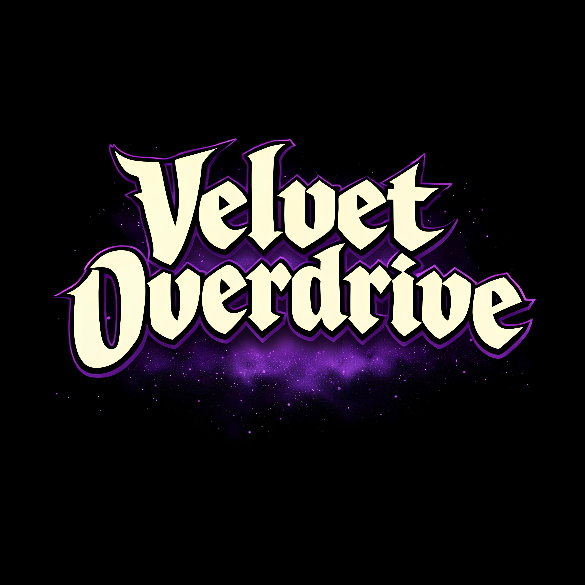
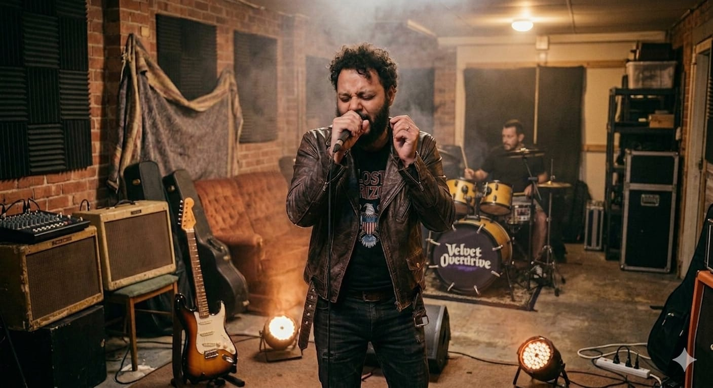
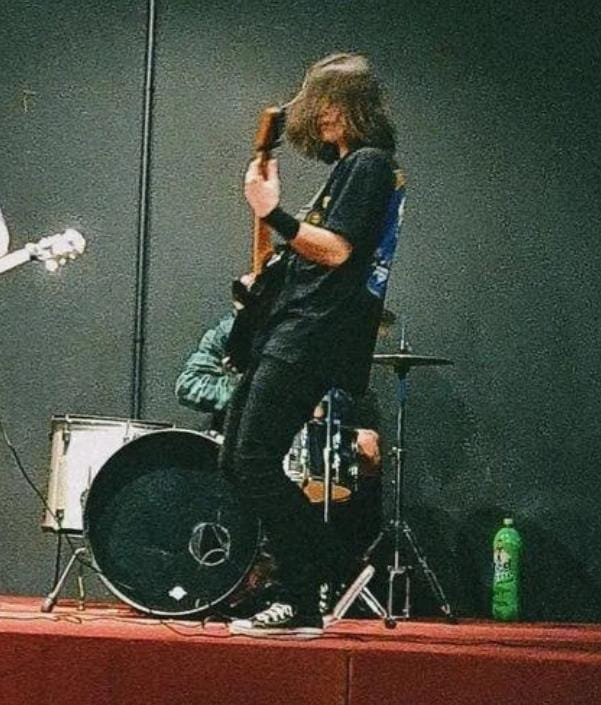
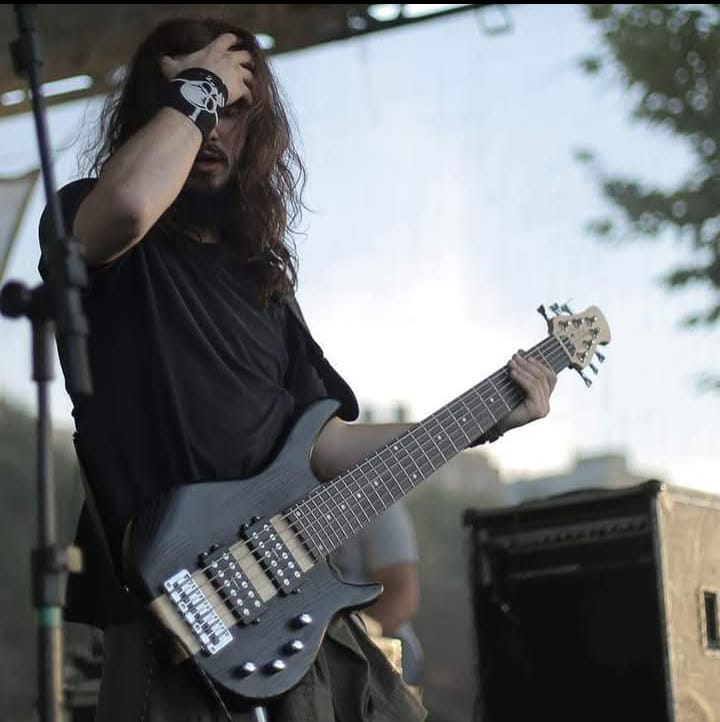
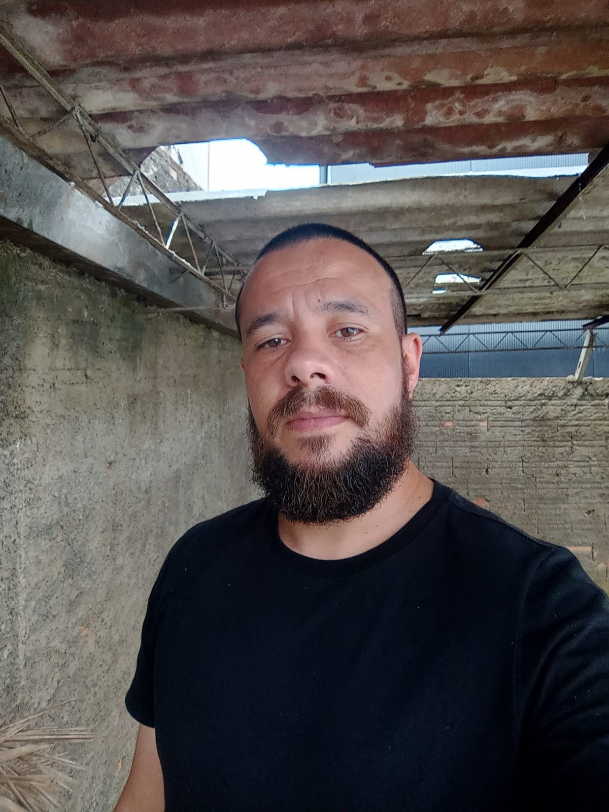

Rock'n Roll · Heavy Metal · Prog
A Velvet Overdrive não nasceu pronta
A história da Velvet Overdrive começou antes mesmo de a banda existir.
Em setembro de 2024, Junior entrou para uma empresa onde Felipe já trabalhava. Em pouco tempo, os dois se tornaram amigos e, ainda naquele ano, começaram a surgir as primeiras conversas sobre uma ideia que parecia simples, formar uma banda.
A ideia foi amadurecendo. No segundo semestre de 2025, começamos a transformar a brincadeira em projeto: escolher um nome, pensar no repertório, definir quais músicas gostaríamos de tocar e procurar pessoas que compartilhassem da mesma paixão pelo rock.
No início de 2026, finalmente aconteceu o primeiro ensaio, na casa da mãe de Ericles, que assumiu os vocais. Pouco depois, conseguimos um espaço cedido pela Secretaria de Cultura de Caçador, onde a banda realiza seus ensaios até hoje.
Ainda no começo dessa caminhada, Gabriel Pressanto, o Bob, foi assistir a um de nossos ensaios. Já éramos amigos havia décadas, quase como irmãos, e naquele dia ele acabou conhecendo de perto o que estávamos construindo. Percebemos que ele havia gostado do que ouviu e, menos de uma semana depois, veio o convite para entrar na banda.
Ele aceitou.
Desde então, seguimos juntos.
Hoje, a Velvet Overdrive reúne quatro amigos com histórias e experiências diferentes, mas unidos pela mesma vontade: tocar rock, criar nossas próprias músicas e contribuir para fortalecer a cena musical da nossa cidade.
Começamos com covers, ensaios e muita vontade de fazer acontecer. Aos poucos, nossas próprias composições começaram a surgir e ganhar espaço no repertório.
A banda ainda está construindo sua história, e talvez essa seja justamente a parte mais interessante dela.
A Velvet Overdrive não nasceu pronta. Está sendo construída.
Repertório
Um pouco do que estamos preparando.
Autorais
Covers
Ensaios gravados
Sem produção. Sem maquiagem. Só a banda fazendo barulho.
A Banda

Ericles Riske
Vocal
Com experiência como vocalista no meio gospel, Ericles agora explora sua paixão pelo rock e pelo heavy metal.

Felipe Czerniak
Guitarra
Começando como autodidata, Felipe Czerniak participou de eventos culturais do IFSC, entre outros eventos da cena caçadorense underground. Tocando predominantemente thrash/heavy metal, destaca-se nos palcos com sua Jackson preta e vestimentas no estilo dos anos 70.

Gabriel Pressanto - (Bob)
Baixo
Já participou de bandas como Warfield e Peabirus, participou do Circuito SESC e esteve envolvido em diversas composições e shows ao longo de sua carreira.

Junior - (Nemesis)
Bateria
Baterista há mais de 15 anos, já integrou diversas bandas de Rock/Heavy metal e atualmente busca resgatar os velhos tempos com suas composições inspiradas em diversos estilos dentro do universo headbanger.
Próximos shows
Velvet Overdrive
Local do evento
Velvet Overdrive
Outro local